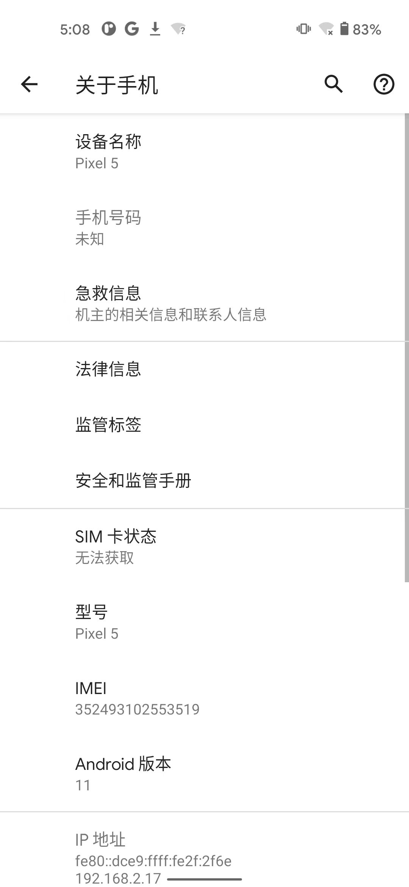

Xposed插件开发
TODO：
- 【未解决】用FDex2核心源码开发出可以正常安装的安卓apk的XPosed插件
- 【记录】参考和翻译XPosed的官网关于如何开发XPosed插件的文档
- 【记录】确保Android Studio能用Nox安卓模拟器设备去调试
- 【已解决】Android Studio中实现一个空功能的基本的安卓apk
- 【未解决】给安卓应用中新增一个按钮和点击按钮改变文字
- 【已解决】安卓app开发：新增一个按钮并设置文字和点击响应事件函数
- 【记录】Nox夜神模拟器中查看已安装的Xposed插件的安卓应用
- 【已解决】把XPosed插件的安卓apk安装到Nox夜神安卓模拟器中
- 【记录】确认XPosed插件生效正常工作输入期望log日志信息
- 【已解决】研究XPosed Installer的log日志
- 【记录】给XPosed插件版本号增加为1.1且用AS重新调试安装
- 【已解决】XPosed插件报错：java.lang.IllegalAccessError Class ref in pre-verified class resolved to unexpected implementation
- 【未解决】Android Studio中如何调试XPosed插件
- 【无需解决】把XPosed插件的安卓apk安装到普通安卓AVD模拟器中
- 【未解决】Android Studio调试Xposed插件报错：Waiting for application to come online
- 【未解决】研究安卓设备的设置中的选择调试应用和等待调试器的含义和用法
- 【未解决】AS中调试外部app显示所有进程看不到我们的Xposed插件的app的进程
- 【未解决】Mac中其他好用且能安装Xposed框架的安卓模拟器
- 【记录】下载和研究Xposed的XposedTools源码
- 【未解决】Mac中自己去编译x86_64的sdk23的Xposed框架zip安装包
- 【未解决】换XPosed插件开发所需的安卓模拟器从Nox夜神换为网易Mumu
此处环境：
- 电脑：
Mac- 已安装
Android Studio - 可用adb查看到安卓设备
➜ ~ adb devices -l List of devices attached 9C181A8D3C3F3B device usb:1048576X product:redfin model:Pixel_5 device:redfin transport_id:3
- 已安装
- 安卓手机：
Google Pixel 5Android 11- 
- 已root，已安装：
EdXposed、Magisk
下面介绍，如何开发一个最基本的Xposed插件：
- 用AndroidStudio创建基本的安卓app项目
- 改动项目，增加Xposed相关配置
- 其中包括写Xposed插件代码
- 编译并安装Xposed的插件apk到安卓手机
- 确认Xposed插件的apk已安装，并测试插件是否生效